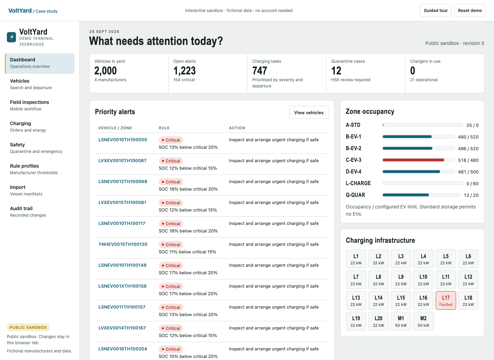

A full-stack case study by Philippe Godfroy
Keep every EV ready for its next move.
Battery inspections, manufacturer rules and yard safety. One clear record for every vehicle on the terminal.
Open to everyone. No account, installation or real vehicle data.
C-EV-3 needs attention.
516 EVs in a zone configured for 480. Redistribute vehicles before adding more.
Illustrative layout · fictional inventory · select a zone to explore
The problem
A parked EV still needs care.
On a vehicle terminal, the next move might be days or weeks away. Batteries need checking. Manufacturers set different instructions. A shipping deadline can change the acceptable state of charge.
VoltYard turns those observations and instructions into visible work, with a record of what happened to each VIN. It complements a terminal operating system.
The experience
Follow a vehicle.
Understand the decisions.
A hands-on sandbox with inspections, charging, quarantine and evidence. Your changes stay in your browser tab; reset whenever you like.
Search the inventory, read its history and see the rule behind each alert.
↗Record an inspectionEnter SOC, auxiliary battery condition and concerns. See the next action change.
↗Coordinate the chargeApprove, start and complete a session. Keep metered and estimated energy distinct.
↗Resolve a safety concernMove to quarantine, record a justified decision and export the zone inventory.
↗Inspect the rulesSimulate a threshold change before saving a new manufacturer profile version.
↗
Behind the interface
Decisions you can
trace through the code.
Designed as a C# modular monolith, with pure domain rules and a clear boundary between the interface and the application.
Profiles are data.
Model-specific rules take precedence over manufacturer defaults. Published thresholds are versioned, and new observations retain the version that applied.
Read the rule engine ↗Failed commands leave no trace.
The .NET application validates workflow transitions, rejects stale revisions and commits local storage changes atomically. Tests cover rollback and restart.
Explore the regression tests ↗The trade-offs are documented.
The local backend uses one atomic JSON store. Database migration, individual identity and tenant isolation have explicit release gates.
Read the architecture decisions ↗This public site runs a browser-only simulation with fictional data. The repository includes the separately runnable .NET application with server validation, demo roles and persistent storage. No real terminal systems or chargers are connected.
Verification
Built to be inspected.
Backend regression cases
Boundary values, profile precedence, workflow guards, transaction rollback and persistence.
HTTP assertions
Authentication, role restrictions, validation, stale writes, charging, quarantine and reports.
Fictional vehicles
Deterministic fixtures with 11,714 observations, seven rule profiles and deliberate exception scenarios.
From a demonstration to real operations
For vehicle terminals,
compounds and PDI teams.
EV care is an established operational workflow. Existing yard and charging systems already cover important parts of it. VoltYard explores a complementary inspection, exception and evidence workflow.
A real pilot still needs approved instructions, individual access, reliable inventory integration and an operator-led field study. Customer demand and operational benefits have not yet been validated.
Read the operational fit review ↗